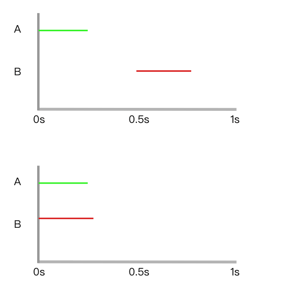
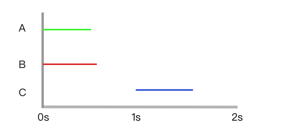
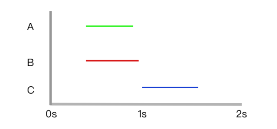
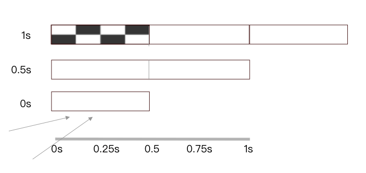
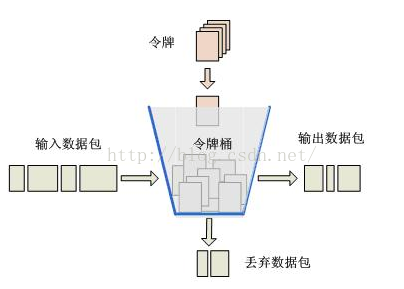
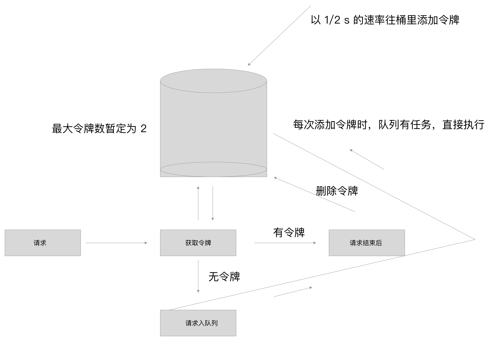

如何搞定接口并发？想学我教你呀！
关于限流
背景
最近和龙哥在做一款证件照生成项目，大概流程是，前端给一张 base64 图片，后端调用百度的 ai 抠图以及获取图片中人体关键点信息 接口，然后将结果合并返回给前端。
百度这两个服务的每日调用次数是够用的， 5w/日。但他对并发做了限制，默认 QPS = 2。
什么是 QPS
简单来说，就是服务每秒能接收到的最大请求，比如 QPS 为 2，那服务每秒最多接受两个请求，多出来的请求会被忽略掉。
按 QPS（并发量）计费： 调用量免费，免费 QPS 默认为 2，如果您通过百度云的企业认证，接口的免费 QPS 将扩充至 5。同时您可以根据业务需求随时购买扩充 QPS，QPS 可包月购买，也可按天单独购买，灵活多样，适应多场景需求。 当前人体关键点识别、人体检测与属性识别、人流量统计、人像分割、手势识别 5 个接口支持在线购买 QPS。 注意：同一个账号下多个应用共享接口 QPS。
这个 QPS 是非常贵的：
| 购买 QPS 数量 |
按月购买 |
按天购买 |
| 0<QPS<=10 |
500 元/月/QPS |
50 元/天/QPS |
| 10<QPS<=50 |
400 元/月/QPS |
40 元/天/QPS |
| 50<QPS<=100 |
300 元/月/QPS |
30 元/天/QPS |
| 100<QPS |
200 元/月/QPS |
20 元/天/QPS |
解决 QPS 问题
因为我负责后端服务，作为中间人给前端做请求转发，所以要控制对第三方接口的调用量，不能让每秒并发超过 2（这个数值可以提升，取决于钱包厚度，但总有个上限）。
为了方便描述，百度 api 在下文中都被称作 第三方接口
试错法
这个方法很容易想到，当前端请求到达时，我先将它挂起，然后直接去调用第三方，如果返回结果符合预期，则直接将结果返回给前端，否则，等待一段时间，再发起请求，直到结果符合预期。
但仔细想想，这个方法问题很多：
- 等待多少时间？
- 用第三方请求结果去验证，本身就是对资源的一种消耗，十分不优雅。
- 如果有大量前端并发请求到达，有很多无用的请求将发出。
这个方法肯定是行不通的。
计数器
误区
既然每秒并发为 2，那是不是意味着，1/2 秒 发一个请求？那我在 0-1/2s 时设置一个变量 count，当超过一时，则不受理请求。
但是仔细想想，这样也是有问题的。
举个例子：如果两个请求同时到达，按照我们的流程，它们将串行调用。但按照并发为 2 的限制，他们完全可以同时调用。

普通计数器
我们可以启动一个以 1s 为间隔的定时器，在一个周期内，设置一个计数器 count = 2。每当请求来临时，count -= 1。当 count 为 0，请求则挂起。等下个周期再执行。

但还是存在问题，当两个周期中间有请求调用时，我们的 count 就失效了，这里同时收到了三个请求，但间隔小于 1s。

滑动窗口计数器
普通计数器的问题在于临界值问题，在临界值，突然增多的请求会绕过我们的计数器策略，那能不能缩短时间间隔，来保证策略准确率的提升？这就引出了另一经典的并发限流算法：滑动窗口计数器。

在我们的案例中，我们可以将一秒切割成两个分别为 500ms 的格子，每个格子都有自己的 count，当请求到达时，累加所有格子的 count，小于并发数字，则执行下一步，否则挂起。
我们可以用数组来储存格子，比如 slide = [0]，当前只有一个格子，且 count = 0。
随着时间的推移，格子数也增加，比如 500ms 时，slide = [0, 0]。
当 1s 时，由于总格子设置为 2，超出这个数字，则 slide 需要删除第一个格子：slide.unshift()。
代码如下：
1
2
3
4
5
6
7
8
9
10
11
12
13
14
15
16
17
18
19
20
21
22
23
24
25
26
27
28
29
30
31
32
33
34
35
36
37
38
39
40
41
42
43
44
45
46
47
48
49
50
51
52
53
54
55
56
57
58
59
60
61
62
63
64
| class Slide {
constructor() {
this.node = [0];
this.maxNode = 2;
this.qps = 2;
this.inter = (1 / this.qps) * 1000;
this.task = [];
this.interval();
}
get(res) {
const allCount = this.node.reduce((a, b) => a + b);
if (allCount < this.qps) {
this.node[this.node.length - 1] = this.node[this.node.length - 1] + 1;
console.log('执行后node', this.node[this.node.length - 1], res);
} else {
this.task.push(res);
}
}
interval() {
const id = setInterval(() => {
if (this.node.length >= this.maxNode) {
this.node.shift();
}
this.node.push(0);
}, this.inter);
}
}
const slide = new Slide();
setTimeout(() => {
slide.get(300);
slide.get(300);
slide.get(300);
slide.get(300);
slide.get(300);
}, 100);
setTimeout(() => {
slide.get(260);
slide.get(260);
}, 260);
setTimeout(() => {
slide.get(500);
}, 500);
setTimeout(() => {
slide.get(800);
}, 800);
setTimeout(() => {
slide.get(1000);
}, 1000);
setTimeout(() => {
slide.get(1500);
}, 1500);
setTimeout(() => {
slide.get(1900);
slide.get(2000);
}, 1900);
|
这个算法完美了吗？不，还不够。至少它存在以下几个问题：
- 时间间隔被分成了多个格子，很显然，定时器执行的越频繁，咱们系统的性能消耗的越多。
- 我们需要额外的内存空间来存储格子，格子分的越多，需要的空间越大
- 这个算法在一开始就可以接受大量请求，这是好事儿吗？不，你的摩托车在冬天启动前还要预热一下呢。
冷启动
所以这里也要普及一个知识点
Warm Up，即冷启动/预热的方式。当系统长期处于低水位的情况下，流量突然增加时，直接把系统拉升到高水位可能瞬间把系统压垮。通过”冷启动”，让通过的流量缓慢增加，在一定时间内逐渐增加到阈值上限，给冷系统一个预热的时间，避免冷系统被压垮。
比如你预计正常系统并发是 1000，你写的滑动窗口算法很争气，系统刚启动，用户们就发来了 1000 个请求，因为没超过阈值，请求都应该被同时处理，但你的数据库也刚刚启动，各种缓存策略还没准备好，然后你的系统就和你没预热的摩托车一样半路熄火了。
令牌桶算法
这是我最终采用的算法，也是后端处理并发限流场景中用的比较多的算法。

令牌桶是一个桶，装令牌的（废话！）。它的容积有限，只能装 N 个令牌。刚开始是空的，我们的代码每隔一段时间向他加一个令牌，直到桶里的令牌数变为 N。
当请求到来时，先去令牌桶取令牌，如果有令牌，则请求可以被处理，处理完成，删除令牌。否则请求不能被处理或者暂时挂起之后有令牌了再处理（取决于你的业务场景！）
在我的业务场景中，不希望返回前端一个接口繁忙的错误，这样会增加前端的心智负担。当请求被挂起后，如果有新令牌被添加，则直接执行挂起的请求，对前端来说，只是等的稍微久了一点。
所以我对以上流程做了修改：

接下来讲讲代码流程。我是用的 eggjs 框架。
在请求方法中：
1
2
3
4
| const bucketId = await this.app.tokenBucket.getBucket();
const bodyAndRmove = [this.getPassportPhoto(imgStr), this.removeBg(imgStr)];
const [bodyInfo, removeImg] = await Promise.all(bodyAndRmove);
this.app.tokenBucket.delBucket(bucketId);
|
getBucket 是获取令牌的函数，注意它是异步函数。
1
2
3
4
5
6
7
8
9
10
11
12
13
14
15
16
17
18
19
20
21
22
23
24
25
26
27
28
29
30
31
32
33
34
35
36
37
38
39
40
41
42
43
44
45
46
47
48
49
50
51
52
53
54
55
56
57
58
59
60
61
62
63
64
65
66
67
68
69
70
| 'use strict';
module.exports = class TokenBucket {
constructor() {
this.maxLimt = 2;
this.timer = 1000 * (1 / 2);
this.maxBucket = 2;
this.bucketList = [];
this.taskList = [];
this.interval();
}
getBucket() {
return new Promise((resolve) => {
const hasBucket = this.runTask({ resolve });
if (hasBucket) {
return;
}
console.log('no bucket, push in tasklist');
this.taskList.push(resolve);
});
}
runTask({ resolve }) {
const item = this.bucketList.filter((item) => !item.used);
if (!item.length) {
console.error('入栈');
return false;
}
console.log('执行', item.length, item);
const firstItem = item[0];
resolve(firstItem.id);
firstItem.used = true;
return true;
}
delBucket(id) {
const index = this.bucketList.findIndex((item) => item.id === id);
if (index === -1) {
return;
}
console.log('删除令牌');
this.bucketList.splice(index, 1);
}
interval() {
console.log('令牌桶状态', this.bucketList);
if (this.bucketList.length < this.maxBucket) {
const random = new Date().getTime() + Math.floor(Math.random() * 1000);
this.bucketList.push({
id: random,
used: false,
});
}
const item = this.bucketList.filter((item) => !item.used);
if (item.length && this.taskList.length) {
console.log('运行队列任务');
const resolve = this.taskList.shift();
this.runTask({
resolve,
});
}
const id = setTimeout(() => {
this.interval();
clearTimeout(id);
}, this.timer);
}
};
|